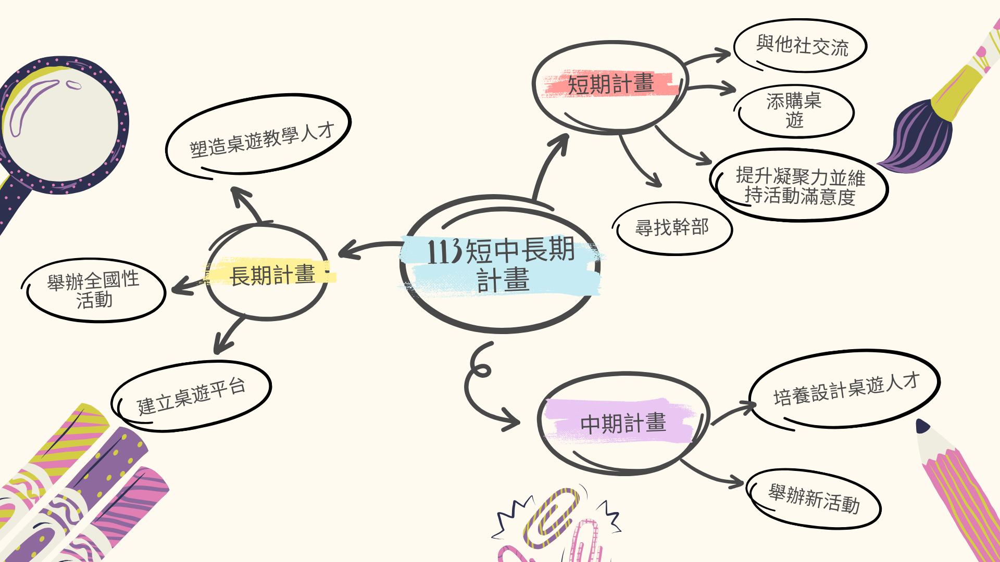

113年舊版短程／中程／長程計畫
| 計畫時程 | 短程計畫 113年–114年 |
中程計畫 114年–116年 |
長程計畫 116年–119年 |
|---|---|---|---|
| 計畫目標 |
|
|
|
| 具體項目 |
|
|
|
| 經費需求 | 活動獎品、添購桌遊費(社費40%)、影印費 | 活動獎品、影印費 | 全國賽參賽者車馬費、人力費、平台架設費 |
| 資源管道 | 社費 | 贊助、社費 | 學校經費申請、桌遊產業合作 |
114年新版 短程／中程／長程計畫
| 計畫時程 | 短期目標 114年–115年 |
中期目標 115年–117年 |
長期目標 117年–120年 |
|---|---|---|---|
| 目標 |
|
|
|
實施策略 |
|
|
|
| 具體項目 |
|
|
|
| 經費需求 | 50000 | 10000 | 全國賽參賽者車馬費、人力費、平台架設費 |
| 資源管道 | 社費 | 社費 | 學校經費申請、桌遊產業合作 |
執行成效表
| 目標 | 計畫時程 | 達成率 | 備註 |
|---|---|---|---|
| 各項活動達到預期指標（滿意度5.2以上），且新進社員留社率達70% | 短期 | 71.4% | 主辦的七項活動中，僅有兩項滿意度未達5.2，其餘皆滿足；上學期社員留社率達98% |
| 尋找幹部 | 短期 | 100% | 已確認下屆幹部人選（儲幹） |
| 購入適合在桌遊社中使用的各式桌遊 | 短期 | 90% | 於本屆購入40款新桌遊，補充社辦庫存13% |
| 凝聚社團向心力 | 短期 | 60% | 定期舉辦狼人殺日及開策日，舉辦成功率60% |
| 建立與他校桌遊社及他社的交流 | 短期 | 12.5% | 參與的活動中只有一項與國際大使交流 |
| 活動滿意度皆達5.2以上 | 中期 | 71.4% | 中期七項活動中兩項未達，其餘均符合預期 |
| 嘗試舉辦不同於以往的活動 | 中期 | 59% | 七項活動中有四項為本屆新增 |
| 主辦全國性桌遊比賽 | 長期 | 30% | 已有協助「玩樂小子」初賽經驗 |
| 建立桌遊平台，供喜愛桌遊的玩家一起玩 | 長期 | 40% | 已成功製作社團網站，並完整記錄製作流程 |